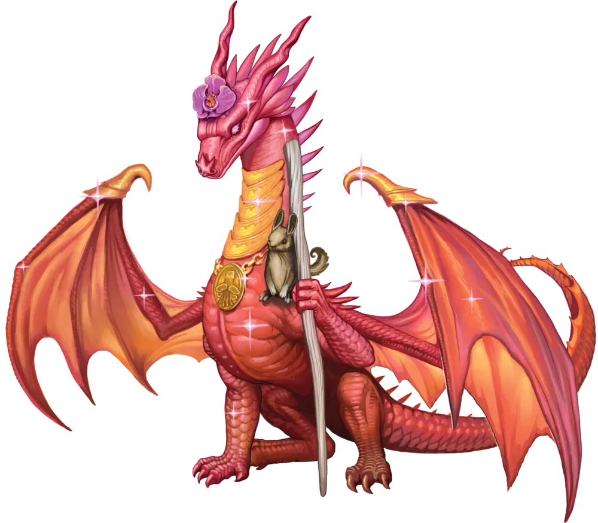
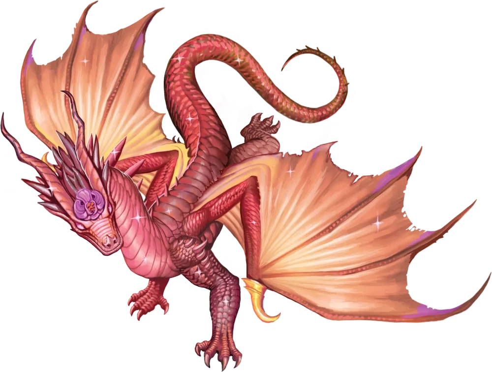
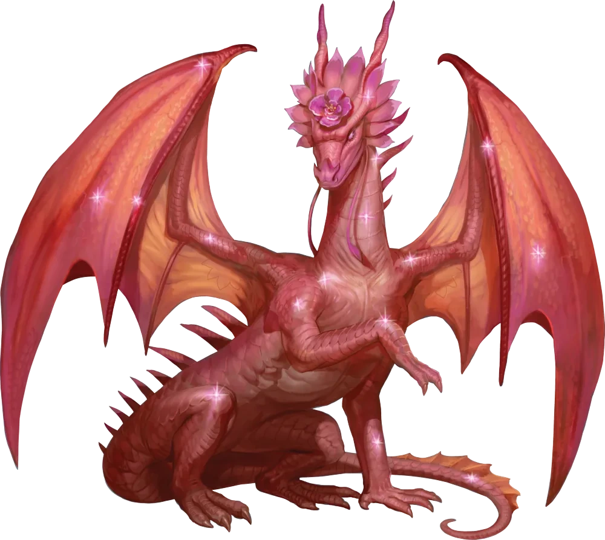

|
巨龙亘古长存，伟力堪比传说，令世间万族为之敬畏、战栗与向往。在某些文化中，巨龙本身便是力量的象征；而在另一些文化里，它们则是王权的先驱。但对巨龙而言，这不过是它们的本色而已。这一朴素的真理从根本上塑造了巨龙与其他种族之间的关系。然而，并非所有巨龙都像人类故事书中所描绘的那样，终日沉睡在堆满财宝的洞窟里，坐等某个鲁莽的冒险者斗胆前来觊觎它们的宝库。有时候，冒险者正是巨龙自己！ 你出身于一脉启迪灵感的缪斯世系。你属于仙灵龙家族的一员。你的关联伤害类型为心灵，且你的吐息武器为 15 尺锥状的馥郁香气，能令敌人在悔恨中备受煎熬，需进行感知豁免。 巨龙特质属性值提升。你的魅力值提升 2 点。你自选的一项属性值提升 1 点。 年龄。任何年龄段的巨龙都可以举行永恒之光仪式，因此哪怕是一条刚完成仪式的初生永光龙，严格来说也可能已经活了数千岁。不过，仪式澎湃的魔法能量会洗去衰老的痕迹。从仪式中苏醒的初生永光龙洋溢着青春活力与无限潜能。尽管部分学者持不同看法，但只要不死于暴力或其他灾祸，永光龙的寿命与传统派巨龙同样漫长。 阵营。永光龙的龙族血统会强烈影响其信念，但影响程度远不如同血统的传统派巨龙。例如，银永光龙往往是善良的捍卫者，而黑永光龙则往往狡诈刻薄。然而，永光龙深知龙脉并非不可违逆的宿命。任何永光龙都可以完全抛弃先祖的旧习，去开拓属于自己的道路。 体型。除非一条永光龙将自身魔力专注于增大体型（许多永光龙都会这样做），否则它们的体型并不会比常见的类人种族更大。你的体型可在小型或中型之间自选。 速度。你的基础步行速度为 30 尺。 黑暗视觉。你同样具备传统派巨龙的敏锐感官。在距离你 60 尺范围内，你可以将微光光照视作明亮光照，将黑暗视作微光光照。你在黑暗中无法分辨颜色，只能看到灰度的影像。 龙之馈赠。你从巨龙职业所列的龙之馈赠中获得一项龙之馈赠。如果某项馈赠具有先决条件，你必须满足其先决条件才能获得它。 龙类。你的生物种类为龙类，而非类人生物。 天生武器。除常规的徒手打击外，你还获得两种天生武器攻击：啃咬攻击与爪击攻击。你的啃咬攻击造成 1d6 点穿刺伤害；你的爪击攻击造成 1d4 点挥砍伤害。 你必须至少有一只手空闲才能发动爪击攻击。 你在进行爪击攻击的攻击检定和伤害掷骰时可以使用敏捷代替力量，但啃咬攻击不适用。 语言。你能够说、读、写通用语和龙语。 镇定自若。你早已习惯应对剧烈翻涌的情感与情绪。你对抗陷入魅惑状态的豁免具有优势。 永光魅心龙背景设定魅心龙天生便倾向于安定下来――寻一处契合心意的栖息之地，与那片土地缔结羁绊，将一方荒野化作自己的圣所。一旦缔结了这份羁绊，魅心龙便极少远行离开，因为一旦离去，他们悉心照料呵护的土地便会因失去魅心龙的坐镇而日渐凋敝――虽不至于彻底死寂，却会退化荒芜――而这会让典型的魅心龙陷入剧烈的情感煎熬。这种天性令大多数魅心龙习惯于长居一地、保持耐心，而这两项特质都使他们很少会主动举行永恒之光仪式。然而与此同时，魅心龙又渴望陪伴与瞩目，期盼能启迪他人投身于艺术创作之中。虽然大多数魅心龙只需让圣所之外的世人知晓自身存在、并欢迎访客踏入圣所，便足以满足这些心愿，但也有一些魅心龙禁不住诱惑，渴望融入节奏明快、人烟稠密的凡人生活，踏上四海为家的旅途去寻访新面孔与新体验。这类四处漂泊的游牧者要么渐渐习惯了随需求变迁而不断告别旧地、另辟新圣所，要么干脆频繁迁徙，从一开始就避免与任何地方缔结圣所羁绊。此外，也有一些魅心龙是为了挽救自己的圣所或其中某位居民免遭灭顶之灾，才自我牺牲成为永光龙。 永光魅心龙最常面临的困扰，便是在毫无防备的情况下与成百上千的陌生人打交道。永光魅心龙每天都会遇到数不清的人：有人仅凭一睹其风采便灵感泉涌，有人痴迷于其绝世美貌无法自拔，还有人千方百计想要留在他们身边。这有时会导致旁人对魅心龙产生病态的执念，妄图将其据为己有，甚至不惜犯下恶行只为博取巨龙的一瞥关注――凡此种种危险事端，都可能迅速令整个社区转而敌视这条巨龙，或是将巨龙及其身边之人推入险境。 在传统派魅心龙眼中，四处漂泊的魅心龙、混迹都市的魅心龙，或是频繁与新圣所缔结羁绊的魅心龙，无异于缺乏耐心、粗鄙浅薄的蠢货――就像一个为了博取关注而不惜放弃魅心龙所能缔结的最神圣、最圆满羁绊（即一处永恒圣所与家园）的任性孩童。不仅如此，传统派还坚信，那些狂热聚集在永光魅心龙身边的人群根本没有做好充分领受巨龙灵感的准备，甚至根本还没准备好与一条魅心龙接触。传统派魅心龙认为自身的存在感是如此摄人心魄，凡人唯有事先做好充分的心理准备再去觐见他们，方能以健康的心态承受这份冲击并继续过好自己的人生。剥夺他人“是否要面见巨龙”的选择权以及做好心理准备的时间，可能会彻底改写对方的一生，这在传统派看来是极不负责任的行径。反过来，永光魅心龙则觉得传统派控制欲过强、未免太过自命不凡。在永光魅心龙看来，“凡人只要见到魅心龙就必然会陷入痴迷”这种论调，与其说反映了周遭凡人的脆弱，不如说暴露了传统派魅心龙自身的狂妄与自视甚高。永光魅心龙成为吟游诗人的情况极为普遍。留在凡间世界闯荡的个体往往倾向于选择能让自己频繁与人互动的职业，并且偏爱运用魔法支援或心智操纵，而非诉诸肉体暴力。牧师、德鲁伊、术士、法师及其他施法者职业都颇为常见；游荡者亦不鲜见，因为这一职业能让他们视局势需要，凭潇洒风度或隐秘手腕灵巧地从棘手困局中脱身。 荒野魅惑我必须承认，魅心龙身上那股充满魔力、近乎磁铁般的吸引力，哪怕是一位超然物外、纯粹客观的学者，心弦也难免会被其轻轻拨动。然而，这与魅心龙对一名凡人所能造成的深远震撼相比简直微不足道。在最理想的情况下，他们能激励凡人攀上辉煌巅峰；但故事的结局并非总是如此美好――在意志薄弱的凡人心中，敬畏与爱慕等正面情感往往转瞬之间便会扭曲为嫉妒、贪欲与狂怒。这一点甚至同样适用于某些巨龙，尤其是那些自制力堪忧的家伙！无论祸福，魅心龙确实当得起他们的名字。 延伸阅读：对应怪物图鉴：魅心龙 ・ 主书通用巨龙种族特质 ・ 巨龙职业 ・ 本卷新增龙之馈赠 |
 魅心龙（Allure Dragon）  魅心龙  魅心龙 |